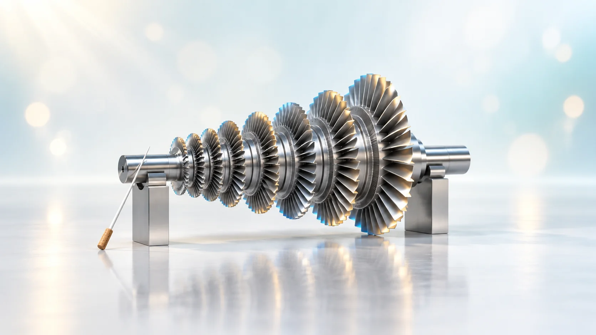
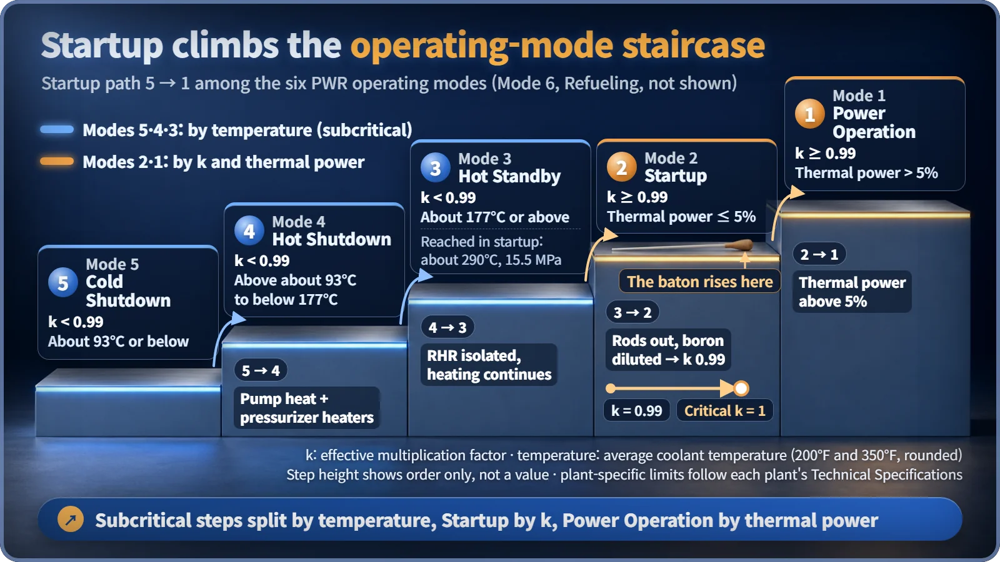
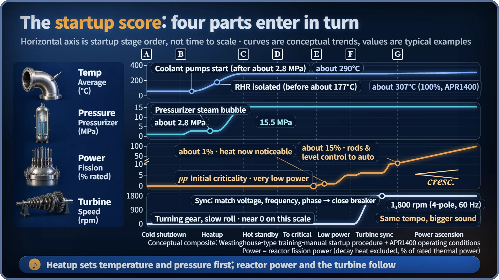

Plant Operation, Control & the Grid · 236
Tune Up Before the Concert — The Big Picture of Nuclear Plant Startup
A nuclear plant does not switch on. It warms up, wakes the reactor, tunes its generator to the grid and only then raises power.

Starting a nuclear plant is not a switch but a sequence: warm the cold plant to operating temperature and pressure, bring the reactor to criticality, synchronize the generator with the grid, and then raise power step by step. Each stage passes a gate in a fixed order, which is why going from cold shutdown to full power takes more than a day. [1]
Tune up before the concert
The first sound you hear in a concert hall isn't music. It's a single long A from the oboe, a note that vibrates about 440 times a second, and every instrument in the orchestra tunes to it. Join the performance out of tune and the whole concert falls apart.
A nuclear power plant goes through exactly the same moment. The power grid in South Korea runs on 60-hertz (Hz) alternating current, which reverses direction 60 times a second, and a generator that wants to join it has to lock onto that beat precisely. The road leading up to that tuning moment is a long one.
Nuclear plant startup is the procedure that warms a cold, shut-down plant to its operating temperature and pressure, brings the reactor to criticality, connects the generator to the grid, and raises power step by step. Many systems join one at a time, each passing through a gate in a fixed order. We'll follow a pressurized water reactor (PWR, a design that keeps its cooling water under high pressure so it doesn't boil), the type used for most reactors in South Korea. The numbers are typical examples and differ a little from plant to plant.
The reactor is still asleep; the pumps do the first shift
The starting point is cold shutdown: the reactor is off and the coolant is at 93°C or below. Here comes the first twist. The thing that warms up the plant is not the reactor. That job belongs to the heat created when the reactor coolant pumps (the huge pumps that circulate the reactor water) churn the water hard, plus the electric heaters inside the pressurizer (a large tank that controls system pressure). Even with several pumps combined, that heat is less than 1% of the reactor's rated power, but it's enough to warm the whole system slowly. [1]
Why not heat with the reactor directly? The reactor water contains dissolved boron, which absorbs neutrons, and while the water is cold, a rise in temperature can actually tilt the reactor toward a stronger reaction. So operators first bring the system close to operating temperature, where the reactor responds in a stable way. There's also a speed limit on heating, usually within a few tens of °C per hour, because thick steel suffers if it's heated in a hurry. [3]
A hot but silent waiting room: hot standby
Partway through heating, the water in the pressurizer starts to boil, forming a steam cushion at the top that makes pressure controllable. Pressure then climbs to about 15.5 megapascals (MPa), more than 150 times atmospheric pressure, and the coolant temperature settles at around 290°C. This state is called hot standby. [3]
In orchestra terms, every musician is seated and the instruments are warmed up. But there's still no sound. The reactor is still off, and the heat the pumps keep producing is thrown away by the steam dumps (valves that send steam straight to the condenser, bypassing the turbine), which hold the temperature steady.
The baton goes up: criticality
Now it's time to wake the reactor. Operators first calculate how far the control rods must be withdrawn to reach criticality, a prediction called the estimated critical position. Then they pull the rods out a little at a time, diluting the boron if needed, and plot how the neutron count rate climbs so they can estimate the critical point ahead of time. The closer the reactor gets to critical, the more sharply the count rate jumps for even a small rod movement, so the final approach is made very carefully. If criticality arrives at a position far from the prediction, the rods go back in and the calculation starts over. [1]
At last: criticality (k = 1). Fission now sustains itself at a steady level, meaning the multiplication factor k (neutrons in this generation ÷ neutrons in the previous one) has reached 1. "Critical" sounds alarming, but a running reactor is always critical. And at this moment, not a single watt of electricity is produced: power is so low that there is barely any heat. The baton is raised, but this is only a soft first note.
The whole journey is also a climb up the staircase of operating modes defined by the safety rules. On the lower steps, temperature sets the boundaries; on the upper steps, the multiplication factor and power do. [2]

| Mode | Name | k_eff | Thermal power | Average coolant temperature |
|---|---|---|---|---|
| 5 | Cold Shutdown | < 0.99 | – | ≤ 93°C (200°F) |
| 4 | Hot Shutdown | < 0.99 | – | above 93°C to below 177°C |
| 3 | Hot Standby | < 0.99 | – | ≥ 177°C (350°F) |
| 2 | Startup | ≥ 0.99 | ≤ 5% | – |
| 1 | Power Operation | ≥ 0.99 | > 5% | – |
Tuning to 60 hertz before joining in
When power reaches about 1%, the reactor's heat finally shows up on the thermometers. Here the main feedwater pumps are brought in, and power is raised to about 5% to prepare for turbine startup. Surplus steam still goes to the steam dumps. [1]
Even before startup, the turbine has been turning slowly so its shaft doesn't bend. Now it accelerates to synchronous speed, which is set by this formula:
n = 120 × f ÷ P
Here n is the speed in revolutions per minute, f is the frequency (60 Hz), and P is the number of generator poles (magnetic north and south poles). Large nuclear generators in South Korea usually have 4 poles, so 120 × 60 ÷ 4 = 1,800 rpm.
Next comes the scene that mirrors tuning in the concert hall: grid synchronization. The generator's frequency, voltage and waveform timing (phase) are matched to the grid, and then the breaker is closed. Connect while out of step and the giant generator shaft and the grid would yank each other into line, causing a severe shock. So operators wait until the needle of an instrument called the synchroscope sits exactly in place before connecting. Right after synchronization the generator picks up about 5% of rated load, and at around 15% the control rods and the steam generator water level are switched over to automatic control. [1]
A slow crescendo
Then comes power ascension. Passing about 30% and 50%, equipment such as additional feedwater and condensate pumps joins in turn, and at about 50%, 70% and 100%, the plant measures its heat output directly to recalibrate the power instruments. It's like sections of the orchestra entering one by one as the music swells. The rate of increase is also limited to protect the fuel and equipment, so going from cold shutdown to full power takes more than a day, and after maintenance, when many tests are required, it can take several days. [1]

The order is the safety
In short, nuclear plant startup is a five-beat sequence: warm up (pumps) → wait (hot standby) → wake up (criticality) → tune in (synchronization) → build up (power ascension). Between every beat sits a gate that asks, "Is it OK to move to the next step?" A nuclear plant doesn't start quickly, not because it's sluggish, but because of a principle: tune every instrument before playing the first note.